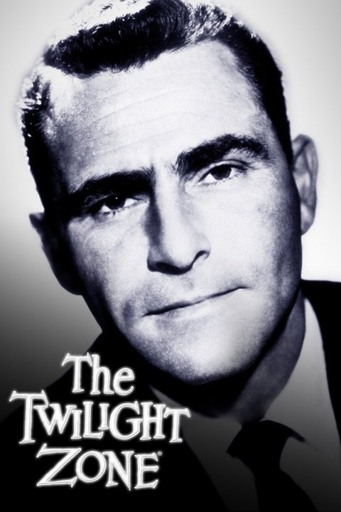

The Twilight Zone (Aired 1959-1964)
Rating: 9/10
Age Restriction: TV-PG
Ordinary people find themselves in extraordinarily astounding situations, which they each try to solve in a remarkable manner.
Creator: Rod Serling
Cast
Rod Serling as .... Narrator
Robert McCord as .... Waiter
Jay Overholts as .... Cowboy #2
Vaughn Taylor as .... Mr. Carsville
James Turley as .... 2nd Fireman
Jack Klugman as .... Captain Ross
Burgess Meredith as .... Henry Bemis